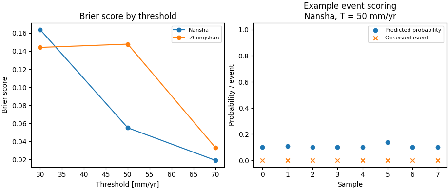

Note
Go to the end to download the full example code.
Compute exceedance Brier scores from calibrated forecasts#
This example teaches you how to use GeoPrior’s
brier-exceedance utility.
Unlike the plotting scripts, this command builds a tidy evaluation table. It turns calibrated forecast CSVs into exceedance Brier scores across one or more thresholds.
Why this matters#
Quantile forecasts are useful only if we can turn them into event probabilities and score those probabilities against observed events.
This builder does exactly that for subsidence exceedance events:
define an event such as
subsidence_actual >= 50 mm/yr,approximate the event probability from
q10,q50, andq90,compute the Brier score,
export the results as one tidy CSV.
That makes it a strong lesson page for the
tables_and_summaries section.
Imports#
We call the real production entrypoint from the project code. Then we read the generated CSV back in and build one compact teaching preview.
from __future__ import annotations
import tempfile
from pathlib import Path
import matplotlib.pyplot as plt
import numpy as np
import pandas as pd
from geoprior._scripts.compute_brier_exceedance import (
brier_exceedance_main,
exceed_prob_from_quantiles,
)
Build two compact synthetic calibrated forecast tables#
The production script expects calibrated forecast CSVs with:
coord_t
subsidence_actual
subsidence_q10
subsidence_q50
subsidence_q90
For the lesson, we build two city-level tables:
Nansha
Zhongshan
over three hold-out years:
2020
2021
2022
The synthetic data are designed so that:
Zhongshan is slightly more subsidence-prone,
uncertainty widens for larger values,
and the actuals are noisy but still broadly aligned with the forecast quantiles.
rng = np.random.default_rng(42)
years = [2020, 2021, 2022]
n_per_year = 55
def _make_city_df(
*,
city: str,
level_shift: float,
spread_scale: float,
) -> pd.DataFrame:
rows: list[dict[str, float | int | str]] = []
for year in years:
yr_shift = 3.5 * (year - 2020)
for sample_idx in range(n_per_year):
base = 28.0 + level_shift + yr_shift
spatial = rng.normal(0.0, 8.0)
latent = max(1.0, base + spatial)
width = 8.0 + spread_scale * (latent / 40.0)
q50 = latent
q10 = max(0.0, q50 - 1.25 * width)
q90 = q50 + 1.25 * width
actual = q50 + rng.normal(0.0, 0.75 * width)
rows.append(
{
"city": city,
"sample_idx": sample_idx,
"coord_t": year,
"subsidence_actual": float(actual),
"subsidence_q10": float(q10),
"subsidence_q50": float(q50),
"subsidence_q90": float(q90),
"subsidence_unit": "mm/yr",
}
)
return pd.DataFrame(rows)
ns_df = _make_city_df(
city="Nansha",
level_shift=0.0,
spread_scale=6.0,
)
zh_df = _make_city_df(
city="Zhongshan",
level_shift=9.0,
spread_scale=7.0,
)
print("Nansha preview")
print(ns_df.head(6).to_string(index=False))
print("")
print("Zhongshan preview")
print(zh_df.head(6).to_string(index=False))
Nansha preview
city sample_idx coord_t subsidence_actual subsidence_q10 subsidence_q50 subsidence_q90 subsidence_unit
Nansha 0 2020 20.636671 14.730661 30.437737 46.144812 mm/yr
Nansha 1 2020 43.245040 17.627933 34.003610 50.379286 mm/yr
Nansha 2 2020 2.763314 0.068271 12.391718 24.715166 mm/yr
Nansha 3 2020 26.092718 13.580963 29.022723 44.464484 mm/yr
Nansha 4 2020 20.073138 12.640792 27.865591 43.090389 mm/yr
Nansha 5 2020 42.767570 18.466087 35.035184 51.604281 mm/yr
Zhongshan preview
city sample_idx coord_t subsidence_actual subsidence_q10 subsidence_q50 subsidence_q90 subsidence_unit
Zhongshan 0 2020 57.022686 28.351428 49.089827 69.828227 mm/yr
Zhongshan 1 2020 21.147331 14.537935 31.408557 48.279178 mm/yr
Zhongshan 2 2020 24.013100 19.111138 37.262257 55.413375 mm/yr
Zhongshan 3 2020 34.798258 14.711623 31.630878 48.550132 mm/yr
Zhongshan 4 2020 53.589838 26.126950 46.242496 66.358042 mm/yr
Zhongshan 5 2020 21.241703 4.585691 18.669684 32.753677 mm/yr
Write the synthetic CSV inputs#
We use explicit per-city CSVs here because the production command supports that mode directly, and it keeps the lesson independent from any external results tree.
tmp_dir = Path(
tempfile.mkdtemp(prefix="gp_sg_brier_exceedance_")
)
ns_csv = tmp_dir / "nansha_calibrated_test.csv"
zh_csv = tmp_dir / "zhongshan_calibrated_test.csv"
ns_df.to_csv(ns_csv, index=False)
zh_df.to_csv(zh_csv, index=False)
print("")
print(f"Nansha CSV: {ns_csv}")
print(f"Zhongshan CSV: {zh_csv}")
Nansha CSV: C:\Users\Daniel\AppData\Local\Temp\gp_sg_brier_exceedance_8xr6zxo4\nansha_calibrated_test.csv
Zhongshan CSV: C:\Users\Daniel\AppData\Local\Temp\gp_sg_brier_exceedance_8xr6zxo4\zhongshan_calibrated_test.csv
Run the real Brier-exceedance builder#
We ask the production command to score three exceedance thresholds over the 2020–2022 hold-out years.
The output is one tidy CSV with:
city
source
years
threshold_mm_per_yr
brier_score
n_samples
src_csv
city source years threshold_mm_per_yr brier_score n_samples src_csv
Nansha test 2020,2021,2022 30.0 0.163875 165 C:\Users\Daniel\AppData\Local\Temp\gp_sg_brier_exceedance_8xr6zxo4\nansha_calibrated_test.csv
Nansha test 2020,2021,2022 50.0 0.055113 165 C:\Users\Daniel\AppData\Local\Temp\gp_sg_brier_exceedance_8xr6zxo4\nansha_calibrated_test.csv
Nansha test 2020,2021,2022 70.0 0.019042 165 C:\Users\Daniel\AppData\Local\Temp\gp_sg_brier_exceedance_8xr6zxo4\nansha_calibrated_test.csv
Zhongshan test 2020,2021,2022 30.0 0.144118 165 C:\Users\Daniel\AppData\Local\Temp\gp_sg_brier_exceedance_8xr6zxo4\zhongshan_calibrated_test.csv
Zhongshan test 2020,2021,2022 50.0 0.147774 165 C:\Users\Daniel\AppData\Local\Temp\gp_sg_brier_exceedance_8xr6zxo4\zhongshan_calibrated_test.csv
Zhongshan test 2020,2021,2022 70.0 0.033200 165 C:\Users\Daniel\AppData\Local\Temp\gp_sg_brier_exceedance_8xr6zxo4\zhongshan_calibrated_test.csv
[OK] brier -> C:\Users\Daniel\AppData\Local\Temp\gp_sg_brier_exceedance_8xr6zxo4\brier_gallery.csv
Inspect the produced artifact#
The command writes one tidy CSV. That is the main artifact of this builder.
tab = pd.read_csv(out_csv)
print("")
print("Written file")
print(" -", out_csv.name)
print("")
print("Brier table")
print(tab.to_string(index=False))
Written file
- brier_gallery.csv
Brier table
city source years threshold_mm_per_yr brier_score n_samples src_csv
Nansha test 2020,2021,2022 30.0 0.163875 165 C:\Users\Daniel\AppData\Local\Temp\gp_sg_brier_exceedance_8xr6zxo4\nansha_calibrated_test.csv
Nansha test 2020,2021,2022 50.0 0.055113 165 C:\Users\Daniel\AppData\Local\Temp\gp_sg_brier_exceedance_8xr6zxo4\nansha_calibrated_test.csv
Nansha test 2020,2021,2022 70.0 0.019042 165 C:\Users\Daniel\AppData\Local\Temp\gp_sg_brier_exceedance_8xr6zxo4\nansha_calibrated_test.csv
Zhongshan test 2020,2021,2022 30.0 0.144118 165 C:\Users\Daniel\AppData\Local\Temp\gp_sg_brier_exceedance_8xr6zxo4\zhongshan_calibrated_test.csv
Zhongshan test 2020,2021,2022 50.0 0.147774 165 C:\Users\Daniel\AppData\Local\Temp\gp_sg_brier_exceedance_8xr6zxo4\zhongshan_calibrated_test.csv
Zhongshan test 2020,2021,2022 70.0 0.033200 165 C:\Users\Daniel\AppData\Local\Temp\gp_sg_brier_exceedance_8xr6zxo4\zhongshan_calibrated_test.csv
Show how the exceedance probability is built from quantiles#
Internally, the script approximates the exceedance probability from q10, q50, and q90 using a piecewise-linear CDF.
Here we compute that probability for a small Nansha subset at a 50 mm/yr threshold so the lesson page makes the mechanism more concrete.
demo = ns_df.head(8).copy()
demo["p_exceed_50"] = exceed_prob_from_quantiles(
demo["subsidence_q10"].to_numpy(float),
demo["subsidence_q50"].to_numpy(float),
demo["subsidence_q90"].to_numpy(float),
threshold=50.0,
)
demo["event_50"] = (
demo["subsidence_actual"].to_numpy(float) >= 50.0
).astype(int)
cols = [
"coord_t",
"sample_idx",
"subsidence_actual",
"subsidence_q10",
"subsidence_q50",
"subsidence_q90",
"p_exceed_50",
"event_50",
]
print("")
print("Probability demo at threshold = 50 mm/yr")
print(demo[cols].to_string(index=False))
Probability demo at threshold = 50 mm/yr
coord_t sample_idx subsidence_actual subsidence_q10 subsidence_q50 subsidence_q90 p_exceed_50 event_50
2020 0 20.636671 14.730661 30.437737 46.144812 0.100000 0
2020 1 43.245040 17.627933 34.003610 50.379286 0.109265 0
2020 2 2.763314 0.068271 12.391718 24.715166 0.100000 0
2020 3 26.092718 13.580963 29.022723 44.464484 0.100000 0
2020 4 20.073138 12.640792 27.865591 43.090389 0.100000 0
2020 5 42.767570 18.466087 35.035184 51.604281 0.138729 0
2020 6 38.909492 13.179200 28.528246 43.877292 0.100000 0
2020 7 23.515994 15.788811 31.740075 47.691339 0.100000 0
Build one compact visual preview#
This preview is not part of the production builder itself. It is a teaching aid for the gallery page.
- Left:
threshold vs Brier score by city.
- Right:
a simple calibration-style view for the 50 mm/yr event in the Nansha subset shown above.
fig, axes = plt.subplots(
1,
2,
figsize=(9.2, 3.9),
constrained_layout=True,
)
# Threshold vs Brier
ax = axes[0]
for city in ["Nansha", "Zhongshan"]:
sub = tab.loc[tab["city"] == city].sort_values(
"threshold_mm_per_yr"
)
ax.plot(
sub["threshold_mm_per_yr"].to_numpy(float),
sub["brier_score"].to_numpy(float),
marker="o",
label=city,
)
ax.set_title("Brier score by threshold")
ax.set_xlabel("Threshold [mm/yr]")
ax.set_ylabel("Brier score")
ax.legend(fontsize=8)
# Probability vs event for a small subset
ax = axes[1]
xx = np.arange(len(demo), dtype=float)
ax.scatter(
xx,
demo["p_exceed_50"].to_numpy(float),
label="Predicted probability",
)
ax.scatter(
xx,
demo["event_50"].to_numpy(float),
marker="x",
label="Observed event",
)
ax.set_title("Example event scoring\nNansha, T = 50 mm/yr")
ax.set_xlabel("Sample")
ax.set_ylabel("Probability / event")
ax.set_ylim(-0.05, 1.05)
ax.legend(fontsize=8)

<matplotlib.legend.Legend object at 0x000002952D272A10>
Learn how to read the output table#
Each row corresponds to one:
city
threshold
year selection
combination.
The most important fields are:
threshold_mm_per_yr: the event definition,brier_score: the mean squared error of the predicted event probability,n_samples: the number of valid rows used in that score.
Lower Brier is better.
What the Brier score means here#
For each threshold T, the script forms:
y = 1ifsubsidence_actual >= T,y = 0otherwise.
Then it compares:
the predicted exceedance probability
p,against the observed event indicator
y.
The Brier score is the mean of (p - y)^2 across rows.
Why the quantile interpolation matters#
This script does not assume a full parametric forecast distribution.
Instead, it uses the three available quantiles:
q10
q50
q90
to build a simple piecewise-linear approximation of the CDF. That makes the builder very practical for forecast archives that store only a few quantiles rather than full predictive samples.
Why this page uses explicit CSV inputs#
The production command can auto-discover inputs from a results tree, with:
--source auto: prefer TestSet, else fall back to Validation,--source test: require TestSet,--source val: require Validation.
In this lesson page we pass the city CSVs explicitly because it keeps the example self-contained and easy to run anywhere.
Command-line version#
The same workflow can be reproduced from the CLI.
Legacy dispatcher:
python -m scripts compute-brier-exceedance \
--root results \
--source auto \
--thresholds 30,50,70 \
--years 2020,2021,2022
Modern CLI:
geoprior build brier-exceedance \
--root results \
--source auto \
--thresholds 30,50,70 \
--years 2020,2021,2022
Explicit per-city files:
geoprior build brier-exceedance \
--ns-csv path/to/nansha.csv \
--zh-csv path/to/zhongshan.csv \
--source test \
--thresholds 30,50,70 \
--years 2020,2021,2022 \
--out brier_scores.csv
The gallery page teaches the builder. The command line reproduces it in a workflow.
Total running time of the script: (0 minutes 1.320 seconds)